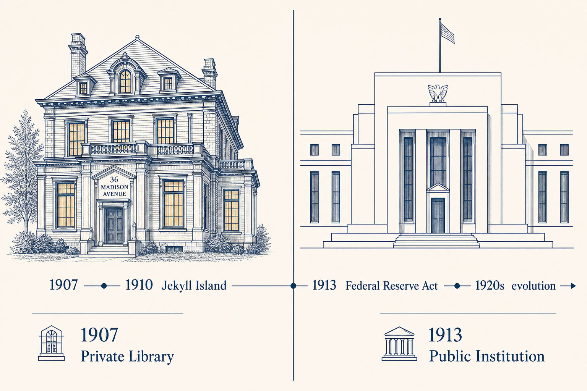

为什么美联储像是从摩根图书馆里长出来的？
1907年秋天，美国金融市场经历了一场恐慌。尼克伯克信托公司收购联合铜业失败，触发了连锁挤兑。多数人听说过这个故事的后半段：摩根出面救市，把银行家们叫到自己图书馆，在限定空间内组织协商，搞定了流动性危机。
但这个叙事忽略了一个关键问题：谁来承接这个超出个人能力的协调功能？
1907年的危机暴露的不是华尔街的贪婪，而是一个结构性天花板。一个人、一个图书馆能组织多少资源？当规模超过个人网络的上限，私人协调的天花板就到了。

一、私人协调的天花板
要理解1907年危机，先要理解一件事：美国当时没有中央银行。
没有最后贷款人，意味着没有稳定的流动性保障。1907年恐慌一来，纽约第三大信托公司尼克伯克信托投资公司倒闭，引发了整个银行体系的连锁挤兑。
这时候，私人协调网络被迫填补制度空白。
摩根图书馆充当了危机协调指挥中心。摩根将主要银行家召集到麦迪逊大道的私人图书馆，在限定空间内组织协商。这种协调依赖三种能力：
信息权：摩根知道谁手里有什么牌，谁最需要流动性支持。
资金权：他可以动用自有资金，也可以说服其他银行一起出资。
组织权威：他有能力让各方坐下来，接受一个共同的救援方案。
这三种能力的组合，构成了一套完整的"协调权"。它不是资金本身，而是组织协调的能力——召集、查账、安排接盘。
但这种能力依赖个人网络，有天然上限。当规模超过摩根个人网络的承载能力时，私人协调的天花板就到了。美国不能永远等一个救世主出现。

二、摩根图书馆里的三维能力
1907年的协调机制，本质上是三种能力的组合。
信息权体现为摩根对各家金融机构状况的了解。在危机中，知道谁真正需要流动性、谁只是恐慌中的跟风者，这个信息本身就是一种权力。摩根能够评估哪些机构值得救、哪些可以让它倒掉。这不是市场交易，而是基于私人信息的判断。
资金权体现在他能调动自有资金，并说服其他银行共同出资。1907年危机期间，清算所发行了贷款证书，作为临时流动性工具，事实上的准央行角色。这种协调缺乏法律授权，无法持续——但它说明了一个问题：私人机构在紧急时刻可以临时扮演准央行角色。
组织权威体现在摩根能把各方叫到一张桌子上，让他们在限定空间内达成共识。没有这种召集能力，信息权和资金权就是散的。
问题是：这套机制依赖个人生命和信用。一个人可以协调一个图书馆里的人，但协调不了一个国家的金融体系。
三、从清算所到美联储：协调权的转移
承接私人协调功能的第一站，是清算所。
纽约清算所协会成立于1853年，由纽约主要银行组成。1907年危机期间，清算所发行了贷款证书，为成员银行提供临时流动性。这是私人协调机制的机构化尝试。
但清算所有明显局限。它是私人俱乐部，没有政府背书，只能在自己的成员范围内协调。当危机规模超出成员银行范围，清算所的协调能力就到头了。
这暴露了一个根本矛盾：私人协调机制无法承担公共职能。
1907年之后，制度缺口成为共识。1910年，一小群银行家和参议员在杰基尔岛起草了一份央行方案。这个方案倾向于私人银行主导的单一央行模式。
1913年，最终版本的《联邦储备法》通过，威尔逊总统签署。美联储建立，承担起最后贷款人的职能。
美联储接管的，是协调权——召集、组织、安排的权力。它没有消灭华尔街的协调网络，而是把这个功能接过来，赋予了它国家信用背书的稳定性。
四、双重结构：保留协调逻辑的制度设计
美联储的双重结构，常常被误解。
它不是纯粹的政府机构，也不是私人银行。联邦储备委员会是政府机构，设在华盛顿，成员由总统任命、参议院确认。12家区域联邦储备银行由成员银行持有股份。
成员银行必须购买区域联储的优先股，比例通常为资本金的3%至6%。但这些股票没有投票权，无法控制区域联储的运营决策。
更重要的是：区域联储的利润，扣除固定股息后，上缴美国财政部，而不是归属私人股东。
这种设计的精妙之处在于：它保留了私人银行参与协调的逻辑，同时赋予了国家制度的稳定性。
私人银行不是美联储的主人，而是参与者。他们提供资本、分享信息、参与协调过程，但他们不能决定政策方向。最终决策权在联邦储备委员会，这个机构用国家信用为整个系统背书。
双重结构不是妥协产物，而是精心设计。它让协调入口获得了制度基础，让私人协调逻辑得以在国家框架内延续。
五、斯特朗路径：个人到制度的桥梁
本杰明·斯特朗提供了一个具体的人物线索。
斯特朗出身摩根系金融圈，1891年加入库勒-摩根公司，这是摩根体系的一部分。后来他创办了银行家信托公司，1914年起担任纽约联邦储备银行行长，直至1928年去世。
他将摩根系的协调实践带入了美联储。不是作为摩根的代言人，而是作为掌握了一套协调方法的人，在国家制度框架内继续发挥作用。
这不是阴谋，而是机制。个人带着方法进入制度，制度获得方法后开始自我运转。
结尾
1907年的危机告诉我们：当规模超过个人网络上限，私人协调就到了天花板。
美联储的建立，是一个制度化选择。它把"协调权"从个人信任网络转移到国家制度框架，让这个功能不再依赖任何个人的生命和信用。
这不是零和。不是国家赢了，资本输了。也不是资本赢了，国家输了。而是：私人协调的规模局限，推动了制度建设。制度建设反过来，让协调入口获得了更稳定的制度基础。
当产业越来越依赖金融协调，这个入口就会按自己的规则重塑产业。这才是理解美联储的关键：它不是消灭了华尔街的协调能力，而是把这种能力变成了国家制度。